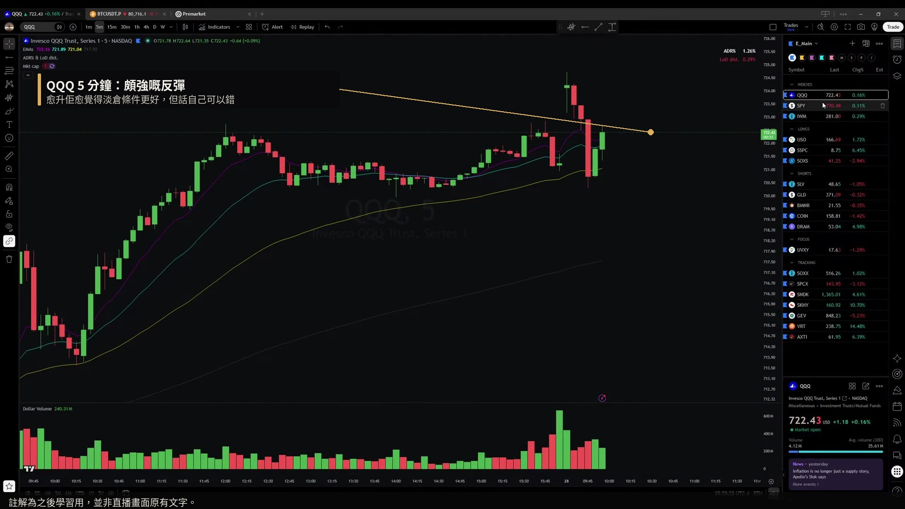
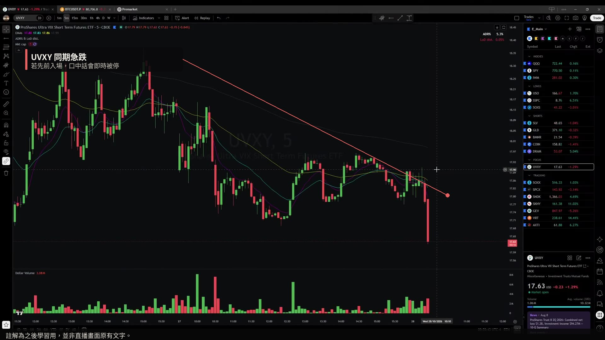

概要
大市急彈，一邊睇淡倉位置，一邊回顧 UVXY
38:25 畫面先係 QQQ 五分鐘急彈。佢話呢下反彈頗強，購買力又再救咗佢：若入場咗 UVXY，就會即時被停。跟住講價格繼續向上推，對佢嚟講愈高，淡倉愈好，但又加一句自己可以錯。
UVXY 想做卻冇購買力，見前面 UVXY 那科。呢科把同一時間嘅大市同 UVXY 一齊讀。
圖一 · 主圖
頗強嘅反彈：愈高佢愈想淡
直播 38:25

原話
Well, pretty strong bounce. Like my buying power has saved me again. Like if I've entered UVXY, then I will get stopped out immediately. As it's getting higher, it's continuing pushing higher. To me, the higher it goes, the better the shorts, but I could be wrong.
係頗強嘅反彈。我嘅購買力又再救咗我一次。如果我入場咗 UVXY，就會即時被停。佢愈升，就繼續向上推。對我嚟講，愈高，淡倉愈好，但我可以錯。
Whisper 把 As it's getting higher 聽成 let's get high knees，把 shorts 聽成 shots；按 YouTube 同語境更正。
點樣讀
「愈高愈好淡」係當時對住急彈嘅想法，佢自己即刻加咗「我可以錯」。
唔好把呢句寫成無條件追淡規則。
圖二
同期 UVXY 急跌，入場就會被停
直播 38:40

原話
Like if I've entered UVXY, then I will get stopped out immediately.
如果我入場咗 UVXY，就會即時被停。
點樣讀
大市向上急彈時，UVXY 見到同期急跌，所以先進場就會面對即時止蝕。
呢幅同 UVXY 那科圖三係同一時間，分別用嚟對照大市同波動。
附註
注意事項
- 38:25 之前有一段關於追價同等待回調嘅問答，冇對應獨立走圖，唔單獨成科。
- 40:33 有人問 FOMC 策略，佢只答 I have a stop loss strategy，之後進入靜音翻圖，唔另開一科。